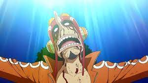

One Piece. Большой куш»
«One Piece. Большой куш» (яп. ワンピース ван пи:су, «Ван-Пис») — сёнэн-манга за авторством Эйитиро Оды, выходящая с 22 июля 1997 года по настоящее время в журнале Weekly Shonen Jump. Объединена в 107 танкобонов. One Piece повествует о приключениях пиратской команды под названием «Пираты Соломенной Шляпы» во главе с капитаном Манки Д. Луффи (яп. モンキー・Ⅾ・ルフィ), в детстве съевшем Дьявольский плод Резина-Резина (яп. ゴムゴムの実 гому гому но ми), давший ему способность растягиваться и сжиматься, как резина. Вместе со своей командой Луффи ищет легендарное сокровище, известное как «Ван-Пис», чтобы стать королём пиратов. В формате тома манга впервые увидела свет 24 декабря 1997 года. В аниме-адаптацию входят телесериал, 15 полнометражных фильмов и несколько OVA. Впервые One Piece вышел на экраны в формате OVA в 1998 году, премьера первой серии аниме-сериала состоялась 20 октября 1999 года. Кроме того, под маркой One Piece выпущено около трёх десятков игр для различных игровых консолей. В России и манга, и аниме лицензированы издательством «Комикс-Арт» под названием «One Piece. Большой куш»[1][~ 1], премьера сериала в России состоялась 16 апреля 2012 года на телеканале 2x2[2]. В 2019 году издательство Азбука-Аттикус объявило о переиздании манги в России. Манга входит в число наиболее успешных изданий компании Shueisha за всю историю[3]. С момента своего выпуска One Piece стал самой популярной мангой в Японии и одной из наиболее популярных манг по всему миру[4]. На момент выхода 67-го тома, первый тираж которого составил 4 050 000 экземпляров — самый большой первый тираж манги в Японии и в мире[5]. В 2021 году стало известно, что суммарные продажи томов One Piece превысили 490 миллионов экземпляров, став вторым по продаваемости комиксом в мире, обойдя Бэтмена и уступая лишь Супермену[6]. One Piece является самой продаваемой мангой в мире, значительно опередив уже завершённый «Жемчуг дракона» и самую продолжительную мангу Golgo 13 (выходящую с 1968 года). Также продажи One Piece достигли 100 000 000 быстрее любой другой манги[7].
Zoro
Ророноа Зоро — персонаж аниме и манги «One Piece. Большой куш», созданной Эйитиро Одой. По сюжету Зоро является первым, кто присоединяется к пиратской команде Манки Д. Луффи, главного героя сериала, после того, как он спасается от казни на базе Морского дозора.
Usopp
Усопп — вымышленный персонаж франшизы One Piece, созданный Эйитиро Одой. Он служит снайпером Пиратов Соломенной Шляпы. Он был четвертым членом команды Луффи
Robin
Нико Робин, также известный как «Дитя дьявола», — вымышленный персонаж франшизы One Piece, созданной Эйитиро Одой. Персонаж впервые появился в 114-й главе серии, которая была впервые опубликована в Японии в журнале Weekly Shōnen Jump от Shueisha 22 ноября 1999 года. Википедия
Nami
Нами — одна из Пиратов Соломенной шляпы и является третьей, кто вступил в эту команду. В команде она занимает должность навигатора.